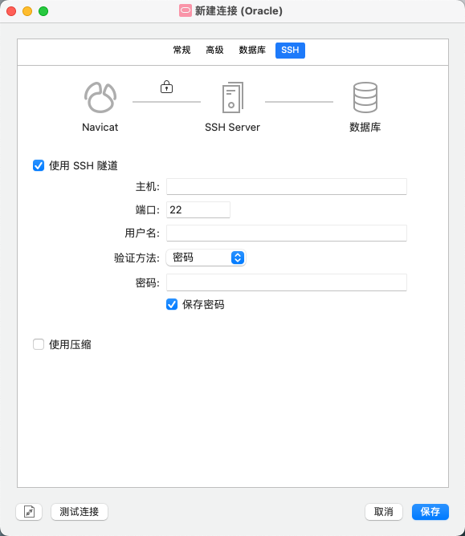

Peekaboo
Hrbust
oracle目前还没有支持M1的版本, 本教程使用SSH来远程登录oracle服务器
在window设置中
适用于 Windows Server 2019、Windows 10,11、Windows Server 2022
OpenSSH 是一款用于远程登录的连接工具，它使用 SSH 协议。 它会加密客户端与服务器之间的所有流量，从而遏止窃听、连接劫持和其他攻击。
OpenSSH 可用于将安装了 OpenSSH 客户端的 Window 10（版本 1809 及更高版本）或 Windows Server 2019 设备连接到那些安装了 OpenSSH 服务器的设备。
可以使用 Windows Server 2019 和 Windows 10 设备上的 Windows 设置安装这两个 OpenSSH 组件。
若要安装 OpenSSH 组件：
打开“设置”，选择“应用”>“应用和功能”，然后选择“可选功能” 。
扫描列表，查看是否已安装 OpenSSH。 如果未安装，请在页面顶部选择“添加功能”，然后：
设置完成后，回到“应用”>“应用和功能”和“可选功能”，你应会看到已列出 OpenSSH 。
安装 OpenSSH 服务器将创建并启用一个名为 OpenSSH-Server-In-TCP 的防火墙规则。 这允许端口 22 上的入站 SSH 流量。 如果未启用此规则且未打开此端口，那么连接将被拒绝或重置。
若要使用 PowerShell 安装 OpenSSH，请先以管理员身份运行 PowerShell。 为了确保 OpenSSH 可用，请运行以下 cmdlet：
Get-WindowsCapability -Online | Where-Object Name -like 'OpenSSH*'
如果两者均尚未安装，则此操作应返回以下输出：
Name : OpenSSH.Client~~~~0.0.1.0
State : NotPresent
Name : OpenSSH.Server~~~~0.0.1.0
State : NotPresent
然后，根据需要安装服务器或客户端组件：
# Install the OpenSSH Client
Add-WindowsCapability -Online -Name OpenSSH.Client~~~~0.0.1.0
# Install the OpenSSH Server
Add-WindowsCapability -Online -Name OpenSSH.Server~~~~0.0.1.0
这两者应该都会返回以下输出：
Path :
Online : True
RestartNeeded : False
若要启动并配置 OpenSSH 服务器来开启使用，请以管理员身份打开 PowerShell，然后运行以下命令来启动 sshd service：
# Start the sshd service
Start-Service sshd
# OPTIONAL but recommended:
Set-Service -Name sshd -StartupType 'Automatic'
# Confirm the Firewall rule is configured. It should be created automatically by setup. Run the following to verify
if (!(Get-NetFirewallRule -Name "OpenSSH-Server-In-TCP" -ErrorAction SilentlyContinue | Select-Object Name, Enabled)) {
Write-Output "Firewall Rule 'OpenSSH-Server-In-TCP' does not exist, creating it..."
New-NetFirewallRule -Name 'OpenSSH-Server-In-TCP' -DisplayName 'OpenSSH Server (sshd)' -Enabled True -Direction Inbound -Protocol TCP -Action Allow -LocalPort 22
} else {
Write-Output "Firewall rule 'OpenSSH-Server-In-TCP' has been created and exists."
}
mac自带SSH服务, 所以安装后，可以使用MAC连接到 OpenSSH 服务器, 在终端中运行一下命令:
ssh username@ipadress #username是安装了Oracle的windows电脑的用户名 ipaddress是该电脑的ip地址
可以通过在windows的PowerShell中运行以下命令来查看ip地址:
ipconfig
按照要求输入密码, 注意是微软用户的密码, 不是电脑的开机密码
连接后，你将看到 Windows 命令行界面提示符：
domain\username@SERVERNAME C:\Users\username>
成功链接后, 在终端输入:
sqlplus / as sysdba
按照提示输入用户名:
sys as sysdba
并按照提示输入口令, 这个口令是在你安装Orecle软件的过程中设置的.
产生以下输出则链接成功
连接到:
Oracle Database 11g Enterprise Edition Release 11.2.0.1.0 - 64bit Production
With the Partitioning, OLAP, Data Mining and Real Application Testing options
使用ctrl+c退出sql服务, 输入exit退出ssh链接
打开Navicat, 左上角选择, 之后选择Oracle.
链接名请随意填写, 主机位置填入localhost, 端口默认为1521
服务名默认为ORCL, 如果你在安装Oracle中没有更改, 则保持不变, 我的改为了ORACLE
角色选择SYSDBA,用户名为sys, 密码就是之前提到的口令.

点击SSH选项
主机填入windows主机的IP地址, 端口默认22, 用户名是windows账户的用户名, 密码是该账户的密码
点击链接测试, 成功链接后点击保存即可.